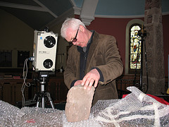

Welcome
Posted: Dec 04, 2006 07:12;
Last Modified: Jun 25, 2021 15:06
Keywords:
Scanning a cross fragment in Ruthwell Kirk for the Visionary Cross Project
Welcome to my University of Lethbridge Home Page.
I am a Professor in the Department of English at the University of Lethbridge and the University Library. In the Department of English, I am responsible for teaching most of our courses on Digital Humanities, medieval literature, the History of the Book, History of English, and the English language/grammar. I also share responsibility for our first year introductory course, English 1900. You can find out more about my teaching by following this link.
My main research interests include Digital Humanities, Scholarly Communication, Old English language and literature, the history of the book, editorial and textual scholarship, and reception-oriented criticism. I maintain a preprint and offprint library where you can access copies of my work at Zenodo, in the University’s Institutional Repository (less complete), and in various commercial sites such as Academic.edu and Research Gate (much less complete). My Google Scholar Profile lists most of my publications; my CV and Uniweb Profile should have all of them.
My current research projects include
- The FORCE11 Scholarly Communications Institution. This is a week-long, international and cross-disciplinary summer school on the latest developments in research communication, held most years at UCLA in the first week of August. This year, it will be held online due to pandemic travel restrictions. I am the founding director of the Steering Committee.
- The Visionary Cross Project (http://www.visionarycross.org/). This is an international project studying the “Visionary Cross” cultural matrix in Anglo-Saxon England, particularly as it is represented in the Ruthwell Cross, Bewcastle Cross, Brussels Cross, and the Vercelli Book poems The Dream of the Rood and Elene. We are currently in the process of digitizing the Ruthwell Cross, funded by SSHRC and the AHRC.
- The Lethbridge Journal Incubator (http://www.uleth.ca/lib/incubator/ and http://www.journalincubator.org/). This project addresses the problem of sustainability in the publication of scholarly journals, by aligning its costs with university educational missions. Work on this project involves developing robust and generalisable XML-based workflows for journal production and training material for student assistants. The result will be an open source production process and business model that will able to encourage academics to experiment with new forms of scholarly publication.
- Global Outlook::Digital Humanities (go::dh). This is a Special Interest Group dedicated to bridging the divide that separates high income economies from mid- and low-income economies in the practice of Digital Humanities.
- Force11 Force11 is a community of scholars, librarians, archivists, publishers and research funders that has arisen organically to help facilitate the change toward improved knowledge creation and sharing. Individually and collectively, we aim to bring about a change in modern scholarly communications through the effective use of information technology.
- Centre for the Study of Scholarly Communication The CSSC is a new Centre at the University of Lethbridge that provides a home for clinical and pure research in Library and Information Science, Research Communication, Publishing, and Knowledge Mobilization, focusing particularly on work on new forms of research communication in the Digital Age.
QR code of my ORCID number 0000-0002-0127-4893 Link to my Google Scholar Profile.In addition to these research projects, I have been active for the last several years in academic and research administration. I am a past president of the Society for Digital Humanities / Société pour l’étude des médias interactifs, a Canada-wide association that both draws together humanists who are engaged in digital and computer-assisted research, teaching, and creation and participates in international efforts to call attention to the importance of digital technology in the practice of the humanities through partnerships with other agencies. I am co-editor of Digital Studies / Le champ numérique and associate editor of Digital Medievalist (http://www.digitalmedievalist.org/journal/), a journal I helped found. In previous years I have been Chair and CEO of the Text Encoding Initiative (TEI) (http://www.tei-c.org/) (2006-2010), founding director of the Digital Medievalist Community of Practice (2003-2009), and chair of my department (2004-2007).
Link to my Google Scholar Profile.In addition to these research projects, I have been active for the last several years in academic and research administration. I am a past president of the Society for Digital Humanities / Société pour l’étude des médias interactifs, a Canada-wide association that both draws together humanists who are engaged in digital and computer-assisted research, teaching, and creation and participates in international efforts to call attention to the importance of digital technology in the practice of the humanities through partnerships with other agencies. I am co-editor of Digital Studies / Le champ numérique and associate editor of Digital Medievalist (http://www.digitalmedievalist.org/journal/), a journal I helped found. In previous years I have been Chair and CEO of the Text Encoding Initiative (TEI) (http://www.tei-c.org/) (2006-2010), founding director of the Digital Medievalist Community of Practice (2003-2009), and chair of my department (2004-2007).
There are a number of different ways of finding out about me or my research and teaching:
- My academic curriculum vitae
- My other blog (originally separate from this; now a mirror).
- My Orchid ID is 0000-0002-0127-4893.
- My personal repository at Zenodo or my articles in Opus, the University of Lethbridge’s Institutional Repository
- My profiles at
- You can also follow me on Twitter as @DanielPaulOD (but to be honest I don’t post there much any more).